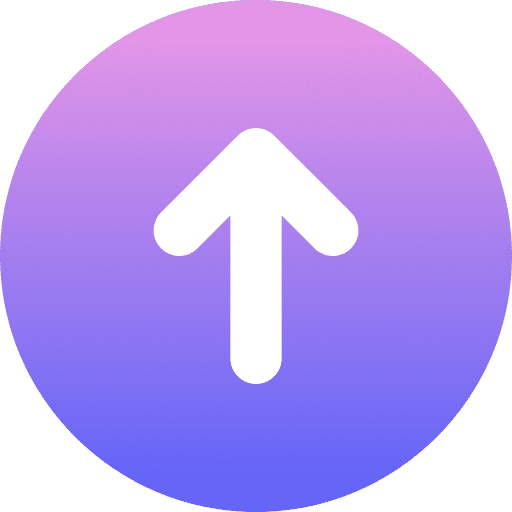

<!-- footer.html -->
<link rel="stylesheet" href="../css/footer.css" />

<footer class="footer-mobile">
  <!-- Bloc gauche : Informations légales (mobile : titres cachés, tablette : titres visibles) -->
  <div class="footer-block footer-left">
    <!-- Titre ajouté (affiché uniquement en tablette) -->
    <h2 class="footer-title">Informations légales :</h2>

    <!-- Liens légaux (identiques à ton mobile d'origine mais transformés en liens cliquables) -->
    <p><a href="legal.html" class="footer-link">Mentions légales</a></p>
    <p><a href="privacy.html" class="footer-link">Politique de confidentialité</a></p>
  </div>

  <!-- Séparateur visuel (visible uniquement en mobile, masqué en tablette) -->
  <div class="footer-separator" aria-hidden="true"></div>

  <!-- Bloc droit : Droits d'auteur (titre affiché en tablette) -->
  <div class="footer-block footer-right">
    <!-- Titre ajouté (affiché uniquement en tablette) -->
    <h2 class="footer-title">Droits d'auteur :</h2>
    <p class="footer-copyright">Copyright © 2025 BillalDev</p>
    <p class="footer-icons">Icons by <strong>Icons8</strong></p>
  </div>
</footer>

<!--  Bouton retour haut de page  -->
<button id="scrollToTopBtn" aria-label="Remonter en haut">
  
</button>
<!-- widget pour une meilleure accessibilité -->
<script src="/js/sienna.min.js" defer></script>
